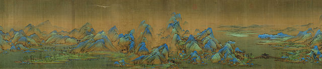
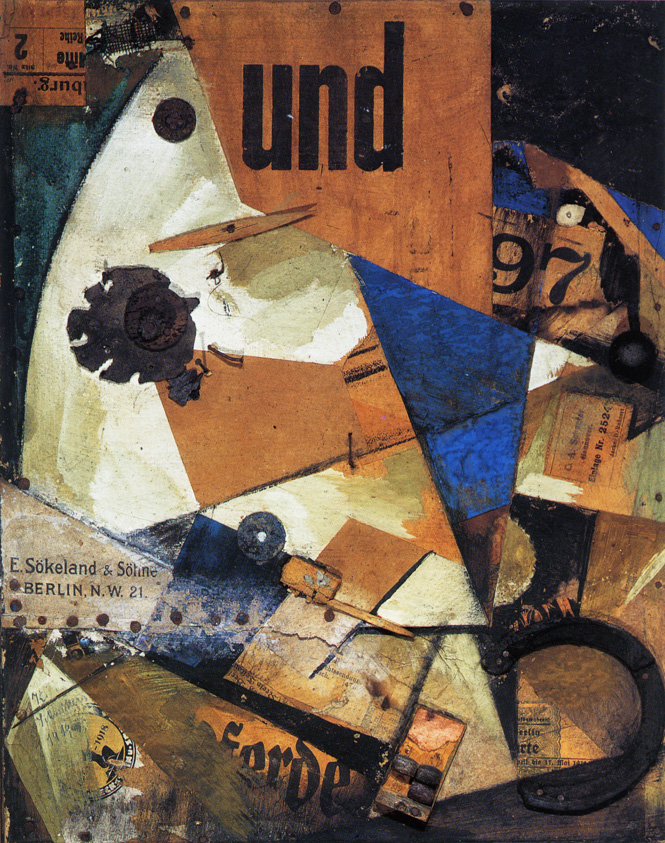

Welcome to the art worldArt is a diverse range of human activity, and resulting product, involves creative or imaginative talent expressive of technical proficiency, beauty, emotional power, or conceptual ideas.

Chinese art is visual art that originated in or is practiced in Greater China. Art created by Chinese residing outside of China can also be considered a part of Chinese art when it is based in or draws on Chinese culture, heritage, and history. Early "Stone Age art" dates back to 10,000 BC, mostly consisting of simple pottery and sculptures. After that period, Chinese art, like Chinese history, was typically classified by the succession of ruling dynasties of Chinese emperors, most of which lasted several hundred years. The Palace Museum in Beijing and the National Palace Museum in Taipei contains extensive collections of Chinese art.

Abstract art uses visual language of shape, form, color and line to create a composition which may exist with a degree of independence from visual references in the world.[1]
Western art had been, from the Renaissance up to the middle of the 19th century, underpinned by the logic of perspective and an attempt to reproduce an illusion of visible reality. By the end of the 19th century many artists felt a need to create a new kind of art which would encompass the fundamental changes taking place in technology, science and philosophy. The sources from which individual artists drew their theoretical arguments were diverse, and reflected the social and intellectual preoccupations in all areas of Western culture at that time.